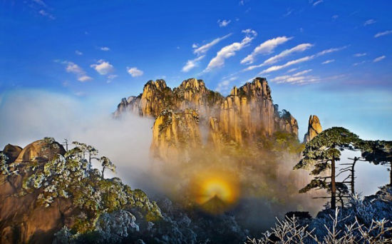

三清山又名少华山、丫山，位于中国-江西省-上饶市-玉山县与德兴市交界处，距玉山县城50公里，距上饶市78公里，为怀玉山脉主峰，主体南北长12.2公里，东西宽6.3公里，平面呈荷叶形，由东南向西北倾斜。因玉京、玉虚、玉华“三峰峻拔、如三清列坐其巅”而得其名，三峰中以玉京峰为最高，海拔1816.9米，是江西第五高峰，也是信江的源头之一。三清山不同成因的花岗岩微地貌密集分布，展示了世界上已知花岗岩地貌中分布最密集、形态最多样的峰林；2373种高等植物、1728种野生动物，构成了东亚最具生物多样性的环境。三清山风景秀美，同时又是道教名山。1988年被列为国家重点风景名胜区，2005年被列为国家地质公园，2008年被列为世界自然遗产，2011年被列国家AAAAA级旅游区，2012年被列为世界地质公园。
三清山的第一次大海浸发生于14亿年前的中元古界。那时三清山地区的地壳运动正处于“地槽”沉降阶段，海水浸没达4亿年之久，沉积数千米厚的双桥山群的复理式海相碎屑岩，并夹杂有海底火山喷发物。在“晋宁运动”后，才结束了地槽式沉降历史，地壳开始逐渐回返上升，出水为陆，三清山地区进入相对稳定的“地台”阶段。10亿年前，三清山地区成为华南洋中的一个岛弧，9-8.5亿年前后，洋盆消失、扬子古板块与华夏古板块碰撞，三清山地区恰处于古板块结合带。中生代以来，陆内A型俯冲与陆内伸展奠定了地质构造和地理格架，为三清山花岗岩地质地貌的形成、生物的繁衍以及人类的发展提供了优越的地质环境。
三清山风景名胜区申报世界遗产成功 中国江西三清山风景名胜区7日在加拿大魁北克城举行的第32届世界遗产大会上，被正式列入《世界遗产名录》。三清山位于江西省东北部上饶市境内，是国家重点风景名胜区。景区内千峰竞秀、万壑奔流、古木茂盛、珍禽栖息。同时她又是一座具有1600余年历史的道教名山，古代文化遗产得到完好保存。可谓亿载造化和千秋人文相融合的典范。
五岳归来不看山
黄山归来不看岳
看罢三清与黄岳
三清美景胜黄岳
网友点评： “一线天”景点，石阶灰常陡峭，二边有二条大铁链，小心翼翼地一步一个台阶地向下挪，还好听了前台说，从南海岸栈道前行，再往“司春女神”景点回走，这样“一线天”是向下行的路程，如果是倒过来走，那“一线天”就是上行，OMG，下行都很艰难，上行是绝对不可能的，因为昨天爬山经历了4.5小时，对我们平时不太运动的城里人来说昨天双腿已酸痛，今天要上行“一线天”那真的没有勇气。经过5个小时，终于回到了天门山庄，又饥又累准备坐索道下山吃饭。 结束了二天的三清山之旅，感觉三清山比黄山更秀美。如果有机会，下次再来。
- 人气:(90)
90 - 规模:(88)
88 - 观光:(100)
100 - 服务:(80)
80
网友好评率：96.7%